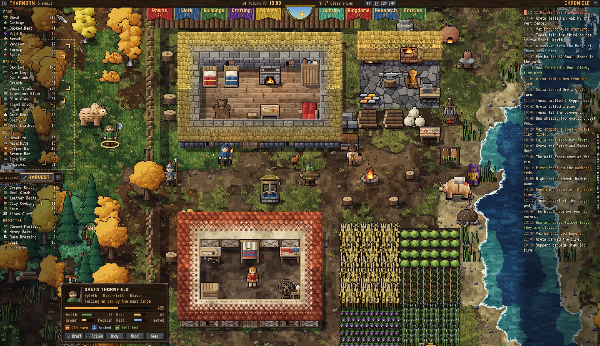
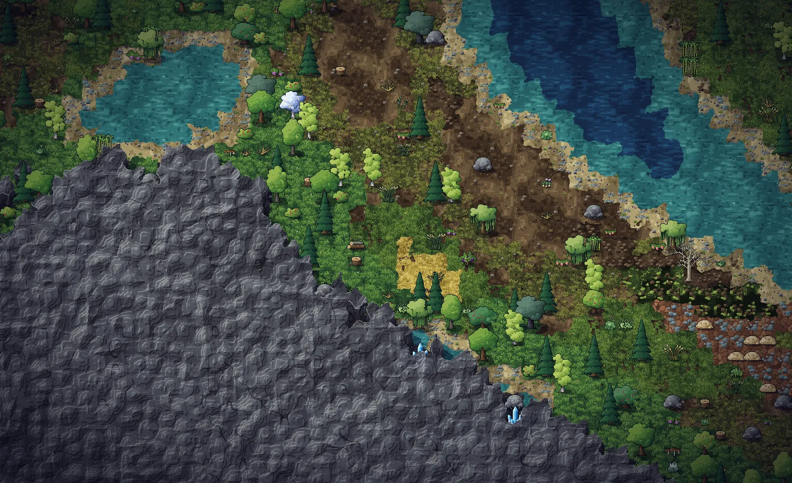

Target lookthe HUD mockup's hand-made scene

Generator experiment · not in the game
Every map below is drawn by the game's own renderer from test/look-overhaul: painted tiles, ground blending, mountain rock as one mass, ore on walls, light with glow and shadows. Noon, clear weather, spring. Branch exp/mapgen-painted-look at 7e16a663.

Left: the running game with the HUD hidden. Right: the same tiles through the renderer used for every picture on this page. 0 of 1,561,600 pixels differ.


Build Tidy. It cuts ground patches from 21.7 to 3.9 per 1000 tiles and unrelated borders from 24% to 17%. Reachable land is unchanged, and it generates about 0.5 s faster on a 500×500 map. It costs 15% of clay and 5% of ore; rare groves grow by 48%. Palettes and Rivers cut unrelated borders to 10%, but they cost 12–14% of wild food and 23–25% of lairs, and about 2.2 s of generation. On seed 1, tree clumps also close a mountain neck. Their large Barren Dirt fields show the dirt tile's diagonal repeat.
What building it means: one step on the generator. tidy becomes the default ground in generateWorld, and the other variants are dropped. It is verified with the headless skill: new colonies on seeds 1, 42 and 1337, run for a fixed number of ticks, with food, wood and stone stock compared to today's map on the same seeds. Generation cost: about −0.5 s at 500×500. Rivers can follow as its own step once the food, lair and reachability losses from Palettes are fixed, since it is built on Palettes.
Close-up: the same 60×40 tiles for every variant on a seed, chosen on today's map for a mix of rock, water and trees. Mid: 120×80 tiles around it.
Numbers are from the earlier run: 500×500 maps, averaged over seeds 1, 42 and 1337. They were measured on an older dev, where resource placement differed from this base. Today's, Tidy's and Palettes' patch counts were checked again on this base and match. The Rivers patch count is re-measured after a fix to the generator: single deep-water tiles inside narrow rivers had shown as dark blocks. Before the fix it was 5.5. Its other figures are from before the fix.
Unrelated border: two touching ground kinds outside one family (dirt–savanna–grass–tall grass, grass–forest floor–mossy ground, moss–bog–mud–clay–quicksand). Reachable: share of walkable land in the largest connected area, without felling trees.